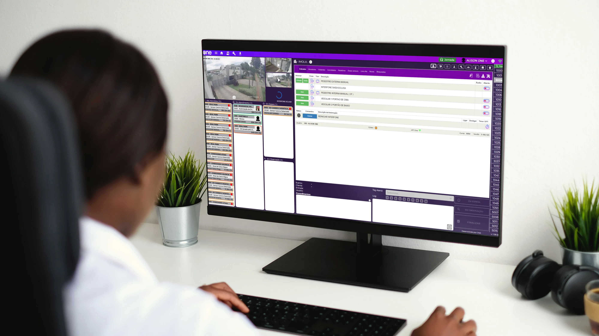

One Plus
💠 Sistema One Plus – A Revolução no Monitoramento de Eventos em Condomínios
Uma solução criada sob medida para empresas de segurança que operam com portarias remotas O One Plus é um sistema de monitoramento de eventos criado especificamente para atender as demandas operacionais de empresas de segurança que prestam serviços em condomínios residenciais e empresariais. Ele substitui soluções genéricas ou terceirizadas por uma plataforma totalmente customizada, eficiente e preparada para o setor de portaria remota, entregando uma operação mais fluida, controlada e com menor custo.
🚀 Principais Benefícios do One Plus:
✅ Central de eventos unificada e interativa Todos os eventos dos condomínios são recebidos, classificados, priorizados e distribuídos em tempo real para operadores, com painéis que segmentam eventos "Não Atendidos", "Em Atendimento", "Em Espera" e "Em Observação".
✅ Alta performance mesmo com múltiplos condomínios conectados O sistema é capaz de processar e gerenciar eventos de dezenas de unidades simultaneamente, garantindo agilidade sem comprometer a performance.
✅ Controle operacional completo Comandos como abertura de portas, acionamento de interfones, liberação de acesso e supervisão por câmeras são centralizados em uma única interface operacional amigável.
✅ Foco na agilidade e na economia Projetado para acelerar o atendimento aos eventos e reduzir o tempo de operação por ocorrência. Isso reduz custos diretos das empresas de segurança ao melhorar o rendimento por operador.
✅ Independência tecnológica Com o One Plus, a One Portaria deixou de depender de sistemas terceirizados que não atendiam integralmente as particularidades do segmento e eliminou custos recorrentes com licenciamento externo.
✅ Interface moderna e adaptada ao fluxo de atendimento real O painel foi construído com base nas rotinas reais dos operadores e síndicos, promovendo uma experiência visual e funcional muito superior aos antigos sistemas legados.
Tecnologias
O One Plus foi um projeto construído do zero, utilizando no front-end:
- React
- React-date-range
- React-iframe
- React-router-dom
- Styled-Components
- Material-UI
- Axios
- WebSocket
- Moment
- HTML
- CSS
- JavaScript
- jMuxer
- Cropperjs
- Buffer
- Eslint
E no back-end:
- NodeJS
- WebSocket
- Express
- Sistema de Cache para otimizar o desempenho e reduzir a carga no banco de dados
- SQLServer
- Integração com Digifort e Dguard para consumo de câmeras de monitoramento
- Consumo de imagens de câmera ao vivo utilizando o protocolo RTSP
- Integração com API oficial do WhatsApp e Telegram
- Integração com 4 empresas diferentes de Armário Inteligentes
- Integração direta com centrais de telefonia IP que utilizam Asterisk
👨💻 Minha contribuição e desafios
- Fui responsável direto pela arquitetura das partes mais complexas do sistema One Plus, liderando tecnicamente soluções críticas e atuando como apoio operacional e consultivo para o restante do time durante toda a execução do projeto.
- Planejamento e desenvolvimento das camadas mais estratégicas do sistema (engenharia de eventos, controle de estados, comunicação em tempo real, etc).
- Apoio técnico ao outro desenvolvedor Sênior na arquitetura geral da plataforma.
- Suporte contínuo à equipe, orientando soluções e desbloqueando tarefas técnicas com maior grau de dificuldade.
- Entregas dentro de um cronograma extremamente desafiador: o sistema foi finalizado em 3 meses e meio, contra uma meta inicial de 3 meses, superando expectativas com estabilidade e robustez.
- Impacto do Projeto: Eliminação da dependência de sistemas terceirizados utilizados anteriormente, com redução de custos operacionais.
- Otimização da rotina de operadores, com melhoria significativa na velocidade e eficiência do atendimento a eventos.
- Implementação contínua: o One Plus é hoje o sistema adotado em todos os clientes da One Portaria, com potencial de crescimento e escalabilidade já comprovada.
←Voltar ao portfólio